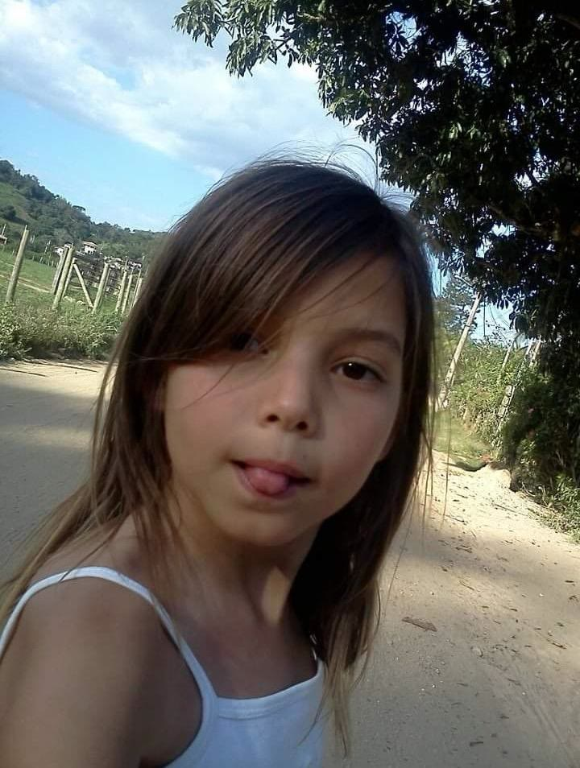
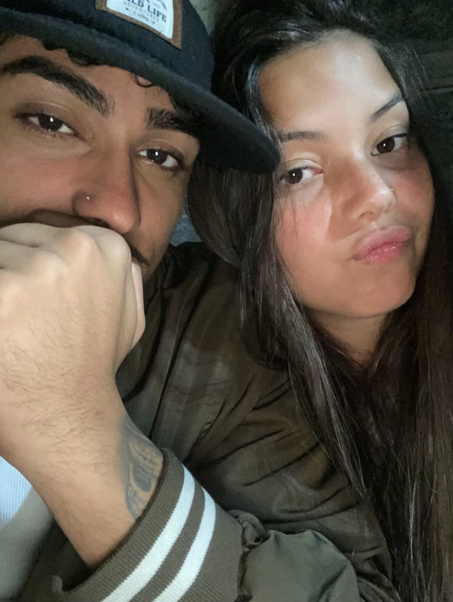
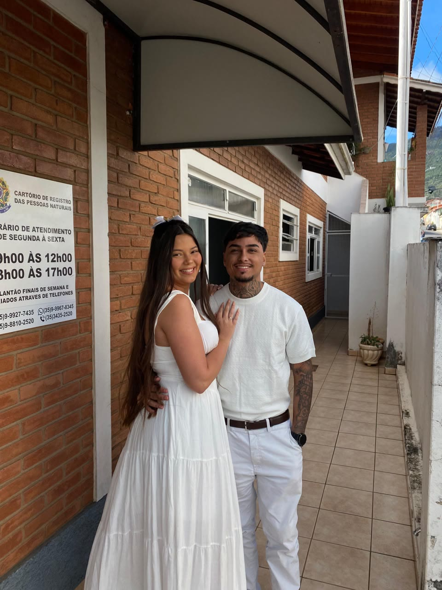
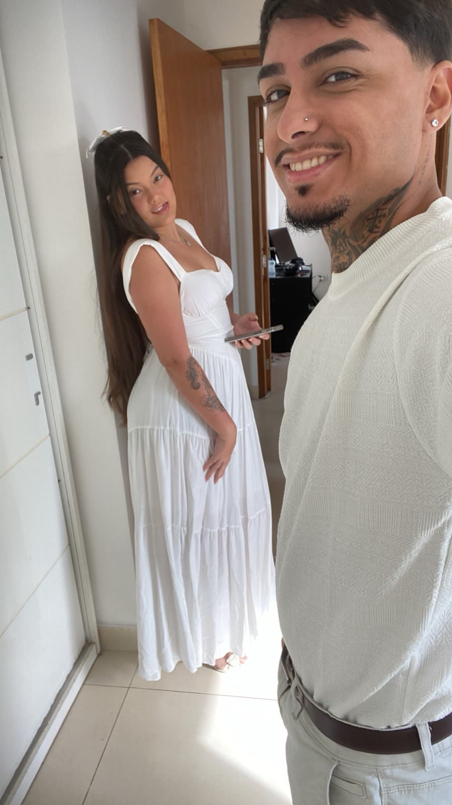
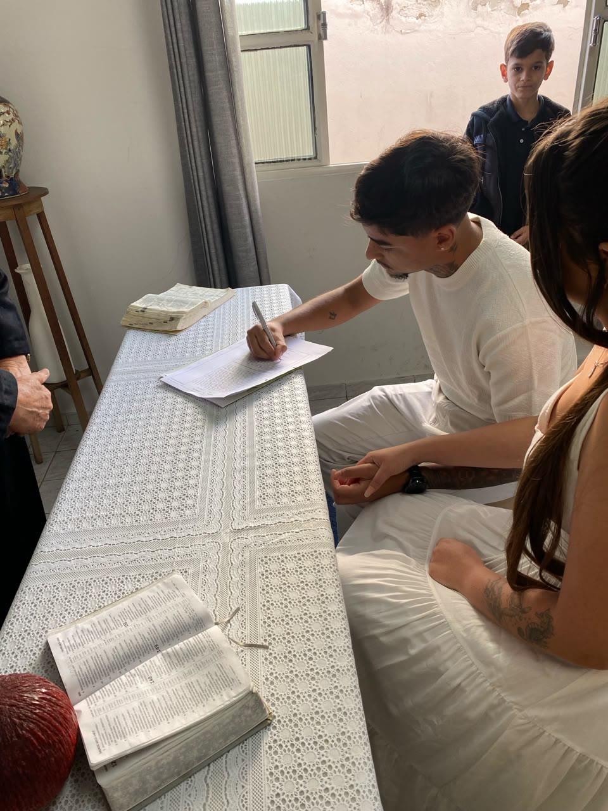
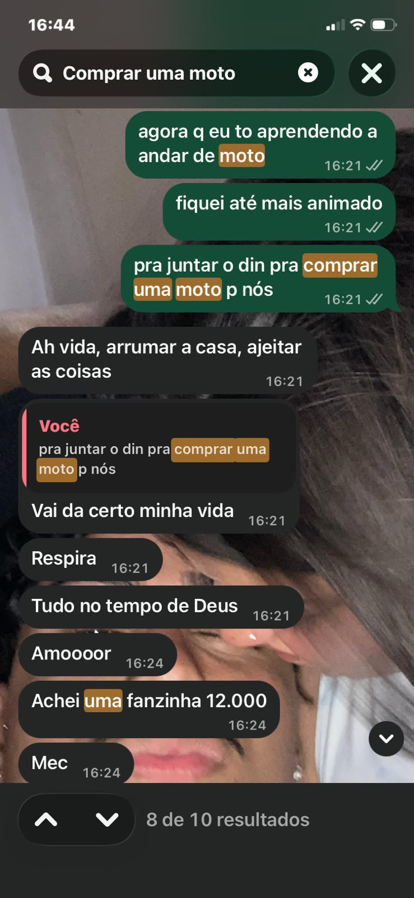
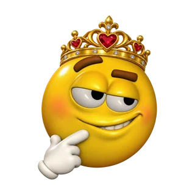

Há 0,0 bilhões de anos, o universo começou.
Dois trilhões de galáxias.Cada uma com centenas de bilhões de estrelas. Cada átomo de cálcio dos seus ossos e de ferro do seu sangue foi forjado dentro de uma delas.
Numa delas, num braço discreto da Via Láctea, uma estrela comum: o Sol.
E ao redor dele, tudo foi se movendo, sem pressa, até chegar a um dia específico.
Cada planeta na posição real, calculada dia após dia. O tempo volta até 2000 e corre, órbita após órbita, até uma terça-feira.
Na véspera, 7 de novembro de 2005, o Sol, a Terra e Marte se alinharam. Marte estava em oposição, o mais brilhante que ficaria até 2018, mais que o dobro de Sirius.
Às 23h57 do dia 8, no horário de Brasília, a Lua chegou exatamente à metade: quarto crescente. Daqui do hemisfério sul, iluminada do lado esquerdo.
Poucas horas depois, à 01h33, a humanidade lançava a Venus Express rumo a Vênus, o planeta que leva o nome da deusa do amor.
Mas o acontecimento mais importante daquele dia não foi visto por nenhum telescópio. Aconteceu aqui embaixo, em Guarapari, no Espírito Santo.

E então, nós.

Capítulo 3“E se a gente jogar isso pra frente?”


A gente jogou pra frente.

E eu assinei kkkk ♥
Uma carta para você.
Toque para abrir.
Amor, que dia especial. O dia em que o amor da minha vida nasceu. Não há alegria maior do que saber que estou em mais uma primavera sua ao seu lado.
Eu sei que talvez não seja o presente que você gostaria de receber. Eu queria muito poder, hoje, nessa data, te dar o mundo, te dar tudo aquilo que você realmente merece. Eu luto todos os dias pela nossa família, pelo nosso amor, e vou continuar correndo por ele.
Só quero dizer que sou grato por tudo. Grato por ter você, por você ser minha esposa, minha amiga, amante e namorada. Pela sua dedicação com a gente, pelo esforço de sempre fazer por nós e não medir esforços.
Essa foi a forma que eu achei de demonstrar um pedacinho do quanto eu te amo, e durante o processo me emocionei muito vendo nossas fotos, vendo nossa trajetória, vendo que estamos construindo uma história linda de se admirar.
O tempo passou muito rápido, né? Esses dias falávamos que íamos casar brincando, e pra mim nunca foi uma brincadeira. Eu sempre quis ter alguém como você do lado: uma mulher linda, carismática e cuidadosa, talentosa e dedicada em tudo que faz. Nos meus sonhos, quando criança, era isso que eu sempre pedia a Deus: alguém firmeza com quem eu pudesse dividir a vida e ter certeza de que era o amor da minha vida.
Esse texto não foi ensaiado, nenhuma linha dele foi planejada; é tudo que há no meu coração. Incrível saber que, em meio a um universo tão vasto, eu consegui encontrar minha metade, a mulher dos meus sonhos. O tempo passou rápido, mas o sentimento e o amor do início permanecem. Só devemos saber lapidá-lo ainda mais, pra fortalecer ainda mais.
Há exatamente 1 ano você estava aqui gravando esse vídeo, deslumbrante como sempre, linda e gostosa, e foi um dia muito gostoso ao seu lado.
E espero que a data de hoje seja ainda mais, com pessoas importantes pra nós. Sei que a pessoa que você mais queria ver no seu aniversário é sua vó, até porque ela é uma das pessoas mais importantes, se não a mais importante. Mas, mesmo que ainda não a vejamos hoje, 08/11, ainda assim espero que seu dia seja cheio de alegria, cheio de amor.
É impressionante como o tempo passou rápido, né? Um dia éramos namorados, no outro casamos. Estamos realizando nossos sonhos. Somos felizes e em breve formaremos uma família linda. Nossa casa, nossa vida é rodeada de bênçãos do Senhor; estamos nos alinhando para aquilo que já é nosso.
Iremos juntos conhecer o mundo, novos países, novas cidades. Viveremos tudo aquilo que hoje é sonho. Tenho certeza de que o universo e Deus irão alinhar a realidade ao nosso favor, e é importante que nós estejamos juntos e cuidando um do outro até lá.
Só tenho a agradecer e nada a reclamar, por ter você do lado, pelos momentos mais simples ao seu lado. E juramos que iríamos passar juntos, na alegria e na tristeza, na saúde e na doença, na pobreza e na riqueza, e assim permanecerá ❤️
Esses dias você tava pegando nossa filha na caixa pra levar pra casa…
…hoje estamos em outra cidade, com uma motinha zero. Mesmo que antes ainda fosse só um sonho, comprar uma motinha, hoje realizamos. Você vê que as coisas vão se encaixando aos poucos, amor?

E estamos vivendo bem, sendo felizes. A verdade é que a vida só tem graça quando damos importância ao simples, damos importância pra aquilo que o dinheiro do mundo inteiro não pode comprar. Os momentos únicos que riqueza nenhuma pode comprar.
Que alegria poder dividir a vida com você, poder ser seu. A lealdade que existe entre nós, o companheirismo, a união… é tudo isso que dinheiro não pode comprar.
Deus faz milagres, e eu sou um milagre. Hoje sou um homem que não precisa de droga, de bebida, que foca no futuro e vê o que realmente importa de verdade: a família, o casamento; que aprecia o verdadeiro sentido da vida. A verdade é que, quando encontramos alguém que nos levanta, que nos incentiva pro bem, o céu é apenas o limite pra todas as coisas que podemos realizar.
Sou feliz, grato por sua vida, por você existir e fazer parte da minha, meu amor. Eu te amo demais. Que essa data seja cheia de lembranças gostosas. Eu amo sua vida, minha princesa. Você é tudo que um dia sonhei; espero poder viver anos e anos e anos, e mais datas do seu aniversário ao seu lado.
Prometo que, quando eu vencer no digital (já estou vencendo, acredite), você vence junto comigo. Vai ser esposa, sócia e tudo ❤️ Gratidão pela sua vida. Gratidão a Deus por tudo.
O texto tá solto mesmo. Só estou escrevendo o que tem no meu coração kkkkkk
Que possamos nos aproximar do Pai, pois vemos que, quando nos afastamos, sentimos necessidade novamente de estar perto, sentindo a presença e vivendo nela. Que Jesus possa cuidar daquilo que só você e Ele sabem no seu íntimo. Que em seus sonhos, metas e tudo aquilo que você deseja alcançar exista Jesus. Que você continue sendo essa mulher maravilhosa, especial, que se entrega a tudo aquilo que faz. Você é admirável, meu amor. Que a presença de Deus sempre esteja conosco.
Eu te amo.— Seu amor

08 · 11 · 2026Feliz aniversário, minha princesa.
feito à mão, linha por linha, para você ♥